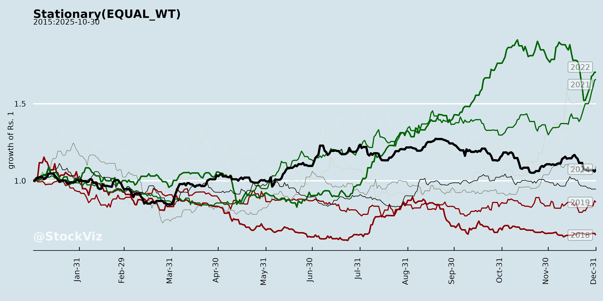
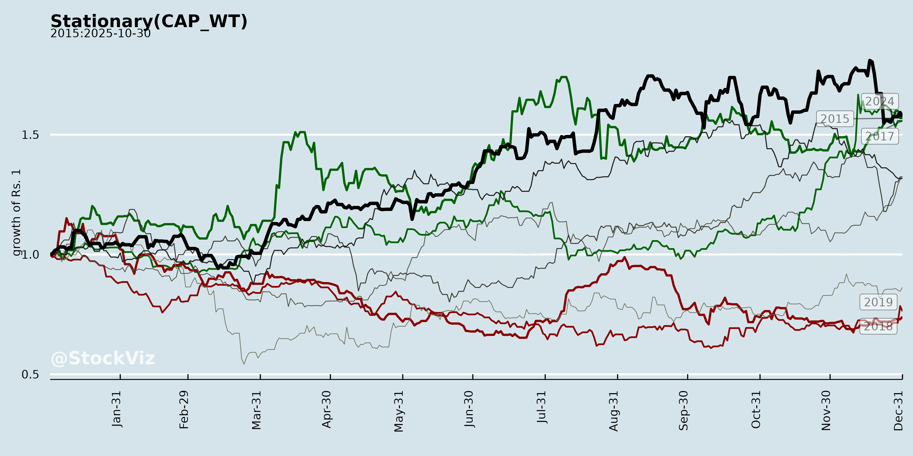
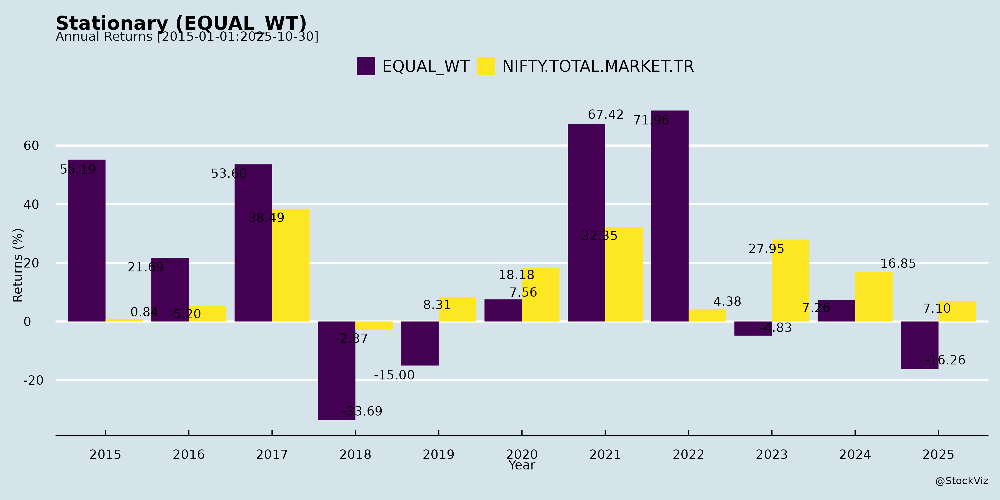
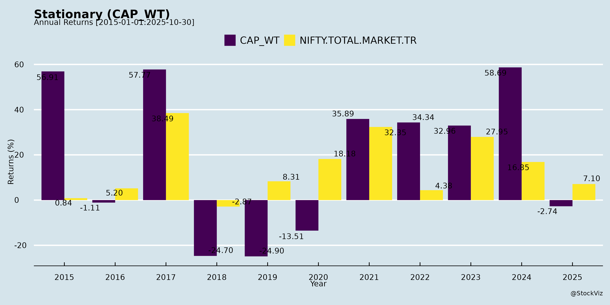
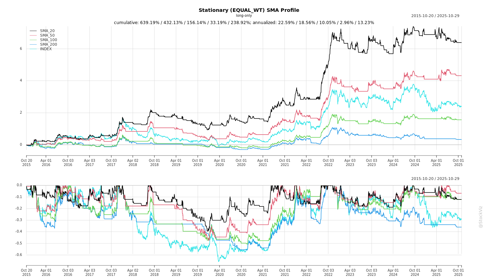
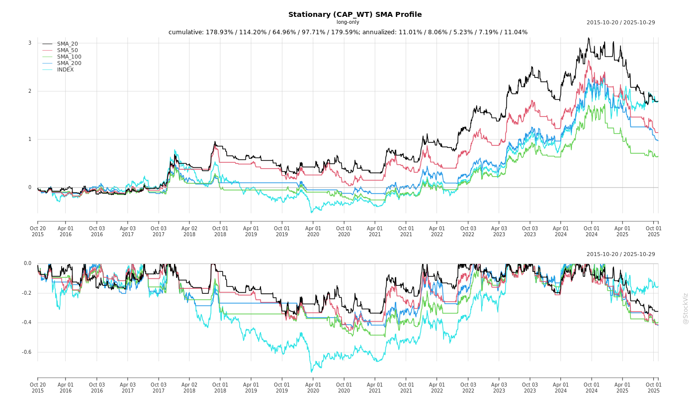
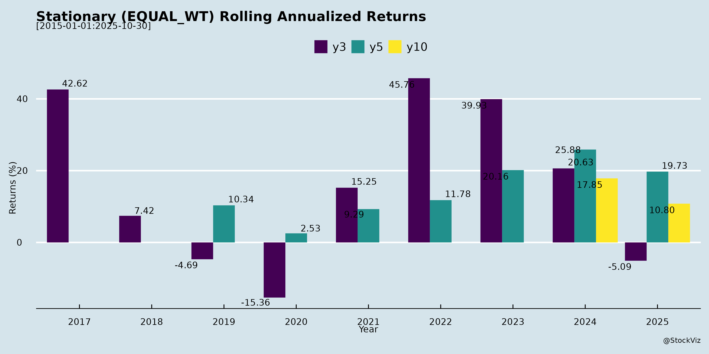

Stationary
Industry Metrics
February 20, 2026
Annual Returns




Cumulative Returns and Drawdowns

SMA Scenarios


Current Distance from SMA
Rolling Returns

Market Cap
EBIT (% of Industry Total)
Revenue (% of Industry Total)
AI Summaries
Analyst
asof: 2025-11-30
Indian Stationery Sector Analysis (Based on Q2/H1 FY26 Earnings Calls of DOMS, Flair, and Linc)
The Indian stationery sector demonstrates resilience amid transitional challenges, with consolidated growth driven by innovation, capacity expansion, and favorable policy shifts. DOMS reported robust 24% YoY revenue growth (despite GST disruptions), Flair achieved 19% YoY growth led by non-pen segments, while Linc showed modest 1% growth but targets double-digits. Key themes include GST 2.0 impacts, export diversification, and premium/new category traction. Below is a structured summary:
Tailwinds (Positive Drivers)
- Policy Boost: GST 2.0 reductions (e.g., 12%/5% to 0% on ~45-50% of products like pencils; 12% to 5% on baby hygiene) create long-term demand uplift via higher disposable income (aided by Budget 2025 tax cuts). Levels playing field for branded vs. unorganized players, favoring organized firms.
- Domestic Demand Strength: Volume-led growth in office supplies/pens (DOMS: 80%+), creatives (Flair: 70%), kits/combos, adhesives, and diversification (DOMS baby hygiene; Flair steel bottles/houseware up 121%). Festive/gifting and back-to-school seasons ahead.
- Export Momentum: 18-41% YoY growth (DOMS: 18.5%; Flair: 41%; Linc improving). Diversification to Latin America (Chile), Middle East, Nepal/Sri Lanka mitigates US tariffs.
- Innovation & Marketing: New launches (mech pencils, markers, premium pens, Warner Bros. tie-ups, Swype) gaining traction. Brand-building via KBC (DOMS), cinema (DOMS), and quick commerce presence.
- Operational Efficiencies: EBITDA margins stable/expanding (DOMS: 17.5%; Flair: 18.8%; Linc: 11.3%). Backward integration (nibs, creatives) and automation supporting 50-52% gross margins (Flair).
Headwinds (Challenges)
- GST Transition Disruptions: Sep’25 destocking/inventory clearance caused 3-4% sales shortfall (DOMS); order postponements and channel slowdowns (all firms). MRP reductions (e.g., DOMS pencils: INR60 to INR58) offset by ~3-4% primary pricing hikes, but ITC ineligibility raises costs (neutralized via pricing).
- Capacity Constraints: Core scholastic stationery/art flat/low-single digit (DOMS: 4-5.5%; Flair pens: 4%; Linc Pentonic degrowth). Growth muted until expansions online (DOMS pencils Q1 FY27).
- Seasonal/Regional Variations: Diwali/Durga Puja slowdowns (East India <10% growth for DOMS); Q3 expected softer.
- Cost Pressures: Employee expenses up 0.8-1% of sales (hiring for expansions/sales teams); higher schemes/rebates during GST (DOMS: up to 3.7% of sales).
- Working Capital Strain: Inventory days elevated (Flair: 92; Linc: 60-65) due to new product testing/portfolio expansion.
Growth Prospects
- Near-Term (H2 FY26): 18-25% revenue growth possible. Back-to-school/exams to drive restocking; double-digit targets (Linc: 10%; DOMS/Flair ahead of 15-20% guidance). Non-core segments (creatives, houseware) to outpace core pens/stationery.
- Medium-Term (FY27+): Capacity ramps (DOMS 44-acre: pencils first; Flair Valsad/Surat: pens/creatives; Linc Bengal/Mitsubishi JV) to unlock 20-30% volume growth. Exports (15-16% mix) via new geographies/partnerships (FILA in Chile). Premiumization (INR10-40 MRPs) and stationery share rise (Linc: 10-12% to higher).
- Long-Term: 15-20% CAGR sustainable via diversification (hygiene/houseware), JVs (Mitsubishi, Morris, Turkish/Kenya for Linc), and GT dominance (70-75% mix). INR1 capex targeting INR3 revenue (DOMS); capex INR150-225 cr FY26 (DOMS/Flair).
Key Risks
- Execution Delays: Expansion slippages (DOMS monsoon delays; Linc JVs losses: INR1.7 cr H1, may persist 1-2Q). JV profitability uncertain.
- Export Volatility: US tariffs causing order postponements (DOMS/Flair); geopolitical tensions.
- Margin Compression: Employee/scheme costs (1-2% sales impact); ITC loss on 0% GST items; inventory buildup for launches.
- Channel/Competition: GT slowdowns (71% mix for DOMS); mass pen crowding (Flair/Linc low-single digits); quick commerce secondary (convenience-only).
- Demand Moderation: Capacity-led growth risks overcapacity if demand softens; regional imbalances (e.g., East India).
Overall Outlook: Positive with cautious optimism. Sector poised for 15-20% FY26 growth (H2 acceleration), buoyed by policy tailwinds and expansions, but GST hangover and capacities cap near-term upside. Organized players (DOMS/Flair leaders) gaining share; monitor Q3 for restocking. Risks mitigated by diversification and strong balance sheets (net cash/debt-free).
Financial
asof: 2025-11-30
Indian Stationery Sector Analysis (Q3 FY25 Insights from DOMS, Flair, Kokuyo Camlin, Linc, Sundaram Multi Pap, and Kshitij Polyline)
Based on the Q3 FY25 (ended Dec 31, 2024) unaudited financial results and disclosures from these listed players, the sector shows polarized performance: leaders like DOMS and Flair exhibit robust growth, while others (e.g., Kokuyo Camlin, Sundaram) face operational challenges. Aggregate revenue growth is positive (~10-20% YoY for top players), driven by volume recovery post-monsoon and festive demand, but margins are pressured by input costs and inventory issues. Below is a structured summary of headwinds, tailwinds, growth prospects, and key risks.
Tailwinds (Positive Factors)
- Strong Volume-Led Revenue Growth: DOMS (Consolidated Q3 revenue +35% YoY to ₹501 Cr), Flair (+18% to ₹265 Cr), and Linc (+stable ~₹122 Cr) benefited from back-to-school/festive demand. 9M growth: DOMS +24%, Flair +7%.
- IPO/Capital Infusion for Expansion: DOMS & Flair (recent IPOs) utilizing proceeds for capex (e.g., DOMS: ₹725 Cr spent on projects; Flair: new Valsad unit). Unutilized funds (~₹9-20 Cr each) parked in FDs, signaling liquidity.
- Margin Resilience & Efficiency: Employee costs up (10-15% YoY) but controlled; positive inventory changes aided gross margins (e.g., DOMS Q3 EBITDA ~14%). Finance costs down post-IPO debt repayment (Flair repaid ₹43 Cr).
- Diversification: DOMS acquired Uniclan (hygiene products, 52% stake for ₹55 Cr), adding new segment; Linc’s JV in Turkey for exports.
Headwinds (Challenges)
- Operational Disruptions: Kokuyo Camlin reported ₹22-23 Cr inventory discrepancies at one plant (Q2/Q3 losses: ₹10-14 Cr pre-tax), triggering forensic audit (Apr 2021-Sep 2024); auditors issued modified review opinion due to Ind AS non-compliance.
- Persistent Losses: Sundaram Multi Pap Q3 loss ₹2.7 Cr (9M: ₹4.3 Cr); auditor qualifications on unconfirmed receivables/payables (long-outstanding, no provisioning).
- Cost Pressures: Raw material costs ~50-60% of expenses (up 10-20% YoY); forex losses (Kokuyo); muted 9M revenue for Kokuyo (-6% YoY).
- Seasonal Volatility: Inventory build-ups/fluctuations (positive changes in Q3 for most, but Kokuyo’s issues highlight supply chain gaps).
Growth Prospects
- High Potential (15-25% CAGR Projected): Education/office stationery demand (India’s per capita spend low at ~₹100 vs. global ₹500); back-to-school recovery evident. DOMS/Flair targeting capex-led capacity (e.g., DOMS project financing ₹2,800 Cr allocated).
- Export & Premiumization: Linc’s Kenya sub/JV in Turkey; DOMS/Flair ESOPs signal talent retention for innovation (gel pens, hygiene diversification).
- Market Leaders Scaling: DOMS 9M PAT +44% (₹162 Cr); Flair steady PAT (~₹89 Cr 9M). Unutilized IPO funds (₹9-21 Cr) for working capital/general purposes.
- Sector Tailwinds: Festive/post-festive momentum into FY26; rural recovery via schemes like PM POSHAN.
Key Risks
| Risk Category | Details | Impacted Companies | Mitigation |
|---|---|---|---|
| Operational/Inventory | Discrepancies, poor controls (e.g., Kokuyo forensic audit; Sundaram unconfirmed balances). | Kokuyo, Sundaram | Audits, process reviews ongoing. |
| Financial/Liquidity | High material costs (50-60% expenses); forex volatility. Losses erode equity (Sundaram OCI negative). | All (esp. Kokuyo/Sundaram) | IPO funds, inventory optimization. |
| Audit/Compliance | Modified opinions (Kokuyo: no conclusion; Sundaram: qualified on receivables). | Kokuyo, Sundaram | Forensic reports public; management assessing prior periods. |
| Market/Competition | Intense rivalry (DOMS/Flair gaining share); seasonal demand (80% H2). | Linc, smaller peers | Diversification (hygiene/exports). |
| Macro | Raw material inflation, slowing consumer spend; unnotified Social Security Code. | All | Hedging, capex efficiency. |
| Corporate Actions | Bonus/splits (Linc), acquisitions (DOMS) dilute EPS short-term. | Linc, DOMS | Long-term value unlock. |
Overall Outlook: Optimistic for Leaders (DOMS/Flair: Buy/Hold) with 20%+ growth via expansion; Cautious on Laggards (Kokuyo/Sundaram: High Risk) due to governance issues. Sector poised for 12-15% FY25 growth, but risks from supply chain could cap it at 8-10%. Monitor Q4 for inventory resolution and festive sustainability. (Data aggregated from filings; standalone/consolidated where relevant.)
General
asof: 2025-11-30
Summary Analysis of Indian Stationery Industry
The Indian stationery industry, particularly writing instruments (pens, pencils, markers, highlighters), is poised for steady growth amid a large addressable market (~₹38,500 crore in FY23, projected to ₹72,000 crore by FY28 at 13% CAGR). Insights are drawn primarily from Linc Limited’s FY25 strategy presentation (detailed industry data), alongside positive developments from peers like Flair Writing (export awards), DOMS Industries (regulatory resolution), Kokuyo Camlin (AGM updates), Sundaram Multi Pap (debt reduction), and Kshitij Polyline (prefundamental filings). The sector benefits from domestic demand drivers (education, offices) and exports, but faces competitive and regulatory pressures.
Tailwinds (Positive Drivers)
- Robust Domestic Demand: Driven by young population (age 6-24: ~400M), rising education spend (₹2.5L crore school budget), and per capita stationery consumption growth. Pens hold ~65% market share (rising to 68% by FY28), with mass (<₹15) at 8% CAGR and premium (₹15+) at 10% CAGR.
- Premiumization Trend: Shift to higher-margin products (e.g., Linc’s Pentonic at ₹10+ grew to 41% share; Flair’s exports at 17.45% revenue). Average pen realization rising (Linc: ₹3.65 to ₹6.13).
- Export Momentum: India among top pen exporters (₹251M in CY24, up in Europe/SEA). Flair won 7th consecutive Plexconcil award; Linc exports at 19% revenue, targeting North America/Africa/South America via expos (Ambiente, Canton Fair).
- Diversification & Innovation: Entry into markers/highlighters (5-6.5% CAGR), stationery (calculators, recycled plastic pens like Linc’s 75% recycled Pentonic). ESG focus (women workforce, tribal education).
- Financial Health Improving: Debt reduction (Sundaram: ₹70Cr to ₹4Cr; Linc net debt negative at -₹18Cr). Strong balance sheets enable capex (Linc: ₹35Cr Kolkata expansion, JV with Mitsubishi for ₹200Cr revenue by FY30).
- Distribution Expansion: Linc added 1.7L touchpoints (to 10Mn outlets incl. kiranas); geographic balancing (West/South up to 37%).
Headwinds (Challenges)
- Intense Competition: Mass segment fragmented (Linc, Cello, Flair, Reynolds); price sensitivity limits hikes. Premium relies on branding amid 100+ players.
- Regulatory/Compliance Burdens: GST scrutiny (DOMS: ₹17.8L penalty paid under protest for transport docs); valuation errors (Kshitij: MAP typo ₹3.75 vs. ₹3.69).
- Historical Stagnation: Per-unit pricing stuck ₹140-145 for years in some segments; inventory/debtor cycles (Linc: 61 days CCC).
- Geographic Imbalance: Rural/low-tier penetration limited; urban bias in premium sales.
Growth Prospects
- Market Expansion: Writing instruments to ₹62-65Bn pens (7.5-8.5% CAGR), ₹23-24Bn pencils, ₹6.5-7Bn markers by FY28. Total stationery CAGR 13%.
- Export Upside: Global ball/gel pens at 12.5% CAGR; India targets developing markets (Africa up 55% YoY for Linc).
- Premium/Stationery Shift: High-margin categories (Linc: Pentonic 34% revenue; new launches like gel pens, markers). Corporate gifting (₹120Bn global).
- Strategic Initiatives: JVs (Linc-Mitsubishi), capacity adds (11 plants for Flair), 1.7L+ touchpoints. Revenue CAGR: Linc 12% (₹396Cr FY20 to ₹543Cr FY25); PAT 14.6%.
- Projections: ROE 17% (Linc FY25); NCOA/dividends rising (Linc: 24% payout).
Key Risks
- Competition & Pricing Pressure: Mass market volume-driven; premium brand erosion if innovation lags.
- Regulatory/Supply Chain: GST/transport issues (DOMS precedent); raw material volatility (plastic dependency).
- Macro/External: Currency fluctuations (exports 19%+ revenue); economic slowdowns impacting education/office spend.
- Execution: Capex delays (Linc expansions by Q3FY26); JV integration (Mitsubishi 51% stake).
- Financial: Working capital strain (inventory 64 days); forex/debt remnants (though low).
- Market-Specific: Slow rural penetration; over-reliance on exports to volatile regions (Africa down 23% YoY for Linc).
Overall Outlook: Positive with Moderate Growth (8-13% CAGR). Tailwinds from premiumization/exports outweigh headwinds; sector leaders like Linc/Flair (strong financials, innovation) positioned for outperformance. Risks manageable via debt-free status and diversification, but regulatory vigilance needed. Investors should monitor Q2FY26 updates for capex progress.
Investor
asof: 2025-11-30
Indian Stationery Sector Analysis (Based on Q2/H1 FY’26 Earnings Calls: DOMS, Flair, Linc)
Tailwinds
- Government Reforms: GST 2.0 reductions (e.g., 45-50% of DOMS sales to 0%, baby hygiene to 5%) create long-term positivity by boosting disposable income, consumer sentiment, and shifting demand to branded/organized players from unorganized (level playing field noted by DOMS).
- Robust Domestic Demand: Strong volume-led growth in non-core segments (e.g., DOMS domestic +28%, Flair creative +70%, steel bottles/houseware +121%); back-to-school, exams, and festive normalization post-GST.
- Product Innovation & Portfolio Expansion: New launches driving traction (e.g., DOMS mechanical pencils, Warner Bros. pencils; Flair 14+ creative SKUs, 17 pens; Linc Swype markers, Pentonic mechanical pencils, Mitsubishi INR20 pen). Diversification into adjacencies (baby hygiene for DOMS, houseware for Flair).
- Export Momentum: Steady growth despite headwinds (DOMS +18.5%, Flair +41% with Latin America/Middle East pickup; Linc organic/inorganic gains in Middle East/Latin America).
- Marketing & Distribution: Brand-building (DOMS KBC sponsorship, cinema tie-ups); deepening GT (75% for DOMS), modern trade/e-com/quick commerce presence.
- Operational Efficiencies: Backward integration (Flair creative to 75%), automation yielding margin stability (DOMS 17.5%, Flair 18.8%).
Headwinds
- GST Transition Disruptions: Temporary destocking/inventory clearance/order postponement (DOMS: 3-4% sales shortfall; Flair/Linc muted Sep’25 sales).
- Capacity Constraints: Core scholastic/pens growth muted (DOMS scholastic flat at +4-5.5%; Flair pens +4%; Linc Pentonic volumes down due to crowded INR10 segment).
- Cost Pressures: Employee expenses up (DOMS +1% QoQ due to hiring; Linc annual increments); inventory days elevated (Flair 92 vs. 85 prior).
- Export Challenges: US tariffs causing order postponements (DOMS mitigated via diversification to Chile/Middle East).
- Seasonality & Regional Variations: Festive slowdowns (Diwali/Durga Puja impacted East India for DOMS; Flair Sep’25 dip).
- JV/Subsidiary Drag: Linc JV losses (INR1.68 Cr in Q2) from greenfield setups (UniLinc, SilkaLinc).
Growth Prospects
- Near-Term (FY’26): DOMS guides 18-20% (H2 optimism from GST benefits, new capacities); Flair sustains 18% H1 momentum (creative/steel bottles key); Linc targets double-digits (H2 acceleration via distribution changes, new launches). Overall sector: 15-25% feasible with volume-led recovery.
- Medium-Term (FY’27+): Capacity unlocks (DOMS 44-acre Q1’27 for pencils/pens; Flair Valsad Q4’26/Surat pencils; Linc Bengal/Morris JV Q4’26). JVs/partnerships to scale (Linc Mitsubishi/Kenya; Flair Maped distribution).
- Strategic Levers: 3x revenue per INR1 capex target (DOMS); premiumization (INR20+ pens); quick commerce/GT throughput; exports diversification. Stationery adjacencies (10-30% mix rise per Flair/Linc).
- Margin Outlook: Stable 16.5-18.8% EBITDA (efficiencies offset costs); kits/combos preserve ITC (DOMS).
Key Risks
- Execution Delays: Construction/monsoon setbacks (DOMS 44-acre slight delay); JV ramp-up (Linc breakeven FY’27?).
- Demand Moderation: Capacity-led growth dependency; crowded mass segments (INR5-10 pens); channel inventory overhang post-GST.
- External Shocks: US tariffs/geopolitics (exports 15-20% mix); raw material/input costs (ITC loss on 0% GST products).
- Working Capital: Inventory buildup from new SKUs (Flair target stabilization); debtor days steady at 81 (Flair).
- Competition & Cannibalization: Pen market saturation; premium launches risking internal overlap (Linc Mitsubishi vs. Pentonic).
- Margin Compression: Employee/ad spends ramp-up (Linc H1 ad 1.6%, potential to 2%); discount rebates (DOMS schemes).
Overall Summary: Sector resilient with 15-25% FY’26 growth potential, driven by GST tailwinds, expansions, and innovation. DOMS leads in scale/margins; Flair in diversification; Linc plays catch-up via JVs. Risks tilted toward execution/GST normalization, but structured expansions position for FY’27 acceleration. Organized players gaining vs. unorganized amid reforms.
Meeting
asof: 2025-12-01
Summary Analysis of Indian Stationery Sector (Based on Q2/H1 FY26 Results of Key Players: DOMS, Flair, Kokuyo Camlin, Linc, Sundaram Multi Pap, Kshitij Polyline)
The Indian stationery sector, dominated by listed players like DOMS Industries, Flair Writing, Linc, and smaller peers, shows resilient growth in H1 FY26 (Apr-Sep 2025), driven by back-to-school demand, premiumization, and capacity expansions. Aggregate revenue growth ~20-30% YoY across majors (DOMS: +20% H1 consolidated; Flair: +32%; Linc: +3% standalone), with EBITDA margins stable at 12-18%. However, challenges like inventory issues (Kokuyo) and capex intensity persist. Below is a structured analysis of headwinds, tailwinds, growth prospects, and key risks.
Tailwinds (Positive Factors)
- Seasonal Demand Surge: Q2 (Jul-Sep) saw strong back-to-school sales; DOMS H1 revenue ₹1,13,019 lakhs (+25% YoY consolidated), Flair ₹60,946 lakhs (+32%).
- Debt Reduction & Margin Improvement: Finance costs down (DOMS: ₹557 lakhs H1 vs. prior; Flair: ₹273 lakhs). Net debt/equity improving (e.g., DOMS borrowings down 30% QoQ).
- Capex & IPO Momentum: DOMS utilizing IPO proceeds (₹8,334 lakhs unutilized for projects); Flair capex via IPO (₹2,732 lakhs unutilized). Expansions in stationery/hygiene (DOMS hygiene segment revenue ₹8,345 lakhs H1).
- Acquisitions & Diversification: DOMS added subsidiaries (Super Treads, Pioneer Stationery); Flair consolidated subsidiaries boosted revenue. Shift to premium/art products (Flair, Linc).
- Operational Efficiency: Inventory optimization (DOMS changes in inventories +₹1,172 lakhs); employee costs up but controlled (~12-15% of revenue).
Headwinds (Challenges)
- Cost Pressures: Raw material costs high (DOMS: ₹58,678 lakhs H1, 52% of revenue); employee expenses up 15-20% YoY amid wage inflation.
- Inventory & Legacy Issues: Kokuyo Camlin flagged ₹2,767 lakhs prior-year inventory loss (forensic audit ongoing); auditor qualified review due to non-retrospective correction.
- Margin Compression in Segments: Smaller players like Kshitij Polyline show volatile profits (H1 ₹69 lakhs on ₹2,107 lakhs revenue); hygiene/art segments loss-making initially (DOMS hygiene ₹107 lakhs H1 profit).
- Slow Growth in Some: Linc modest +3% H1 revenue; Kokuyo Q2 loss ₹786 lakhs amid forex/operational issues.
- Regulatory Scrutiny: GST demands (Linc: ₹707 lakhs contested); Flair/DOMS IPO utilization disclosures.
Growth Prospects
- Market Expansion: Sector to benefit from ₹50,000 Cr+ organized market by FY28 (CAGR 12-15%); premiumization (pens/notebooks) + exports (DOMS/Linc international push).
- Capacity Ramp-Up: DOMS CWIP ₹10,063 lakhs; Flair new Valsad unit (₹2,732 lakhs pending). Hygiene/office segments growing (DOMS hygiene +16% H1).
- M&A Synergies: DOMS Pioneer/Uniclan acquisitions; Flair subsidiaries adding ₹23,051 lakhs H1 revenue.
- Digital/Urban Shift: E-commerce/office revival post-COVID; Linc/DOMS online focus.
- Projections: FY26 revenue growth 20%+; EPS upside for DOMS (₹19 H1 consolidated) via 28% margins.
Key Risks
| Risk Category | Details | Impact/Mitigation |
|---|---|---|
| Operational | Inventory discrepancies (Kokuyo); raw material volatility (steel/paper up 10-15%). | High; forensic audits, hedging needed. |
| Regulatory | GST disputes (Linc ₹707 lakhs); SEBI/ROD scrutiny on IPO use (DOMS/Flair). | Medium; appeals ongoing, provisions low. |
| Financial | High capex (DOMS ₹14,077 lakhs H1 investing outflow); debt (Flair ₹2,802 lakhs). | Medium; cash flows positive (DOMS ₹17,067 lakhs H1 OCF). |
| Market | Competition from unorganized (60% market); monsoon/rural slowdown. | High; premium focus differentiates. |
| Execution | Acquisition integration (DOMS Super Treads PPA adjustments); forex (imports 10-20%). | Medium; subsidiaries contribute 20% revenue. |
Overall Outlook: Positive with caution. Tailwinds from demand/capex outweigh headwinds; growth prospects strong (15-20% CAGR via organized shift). Monitor Kokuyo risks and raw costs. DOMS/Flair leaders; Linc steady; smaller peers volatile. Sector PE ~25x; recommend watchlist for expansions.
Data aggregated from filings; FY26 full-year estimates based on H1 trends.
Press Release
asof: 2025-11-30
Indian Stationery Sector Analysis (Q2 & H1 FY26 Insights from DOMS, Flair, and Linc)
The Indian stationery sector, represented by key players DOMS Industries (diversified stationery/art), Flair Writing (writing instruments/creative/houseware), and Linc (writing instruments), demonstrated resilient top-line growth amid a GST 2.0 transition. DOMS and Flair reported strong double-digit revenue (18-25% YoY) and profitability gains, driven by diversification and exports, while Linc showed modest growth (3-4% YoY) with PAT pressure from JV losses. Aggregate sector revenue expanded ~20% YoY (weighted by size), but margins faced mild compression. Below is a structured analysis of headwinds, tailwinds, growth prospects, and key risks.
Tailwinds (Supportive Factors)
- Robust Domestic Demand & Diversification: High growth in non-core categories like creative/art (Flair +70% YoY to ₹70 cr), steel bottles/houseware (Flair doubled to ₹26 cr), and scholastic/art/paper stationery (DOMS). Multi-product portfolios (e.g., kits, combos, office supplies) cushioned core writing instruments.
- Export Momentum: Flair’s own-brand exports +32% YoY; DOMS’ FILA partnership yielding positive feedback in new regions; Linc’s JVs (Mitsubishi, Morris, Turkish/Kenyan) progressing.
- Policy Boost: GST rationalization and income tax cuts enhancing disposable income and consumption (noted by DOMS/Flair), with price pass-throughs stimulating demand.
- Innovation & Distribution: 36+ new launches/quarter (Flair); ongoing R&D/product engineering (DOMS); deepened domestic networks across 28 states/55+ countries.
- Operational Efficiency: EBITDA growth (DOMS +16%, Flair +19%) despite scale-up, reflecting cost management and backward integration.
Headwinds (Challenges)
- Margin Compression: EBITDA margins dipped (DOMS 17.5% vs. 18.8% YoY; Linc stable but low at 11.6% H1); PAT margins down (DOMS 10.7%, Linc 5.5%) due to transition costs, raw material pressures, and JV losses (Linc ₹16.8 cr impact).
- GST 2.0 Transition: Explicitly cited by DOMS as a headwind, causing short-term disruptions in pricing/supply chains.
- Uneven Growth: Linc’s subdued topline (+3% Q2) and PAT decline (-4% Q2, -10% H1) highlight slower category ramp-up and external delays.
- Slower International Ramp: Linc’s JVs/Kenya ops behind schedule; lingering geopolitical effects on exports (Flair).
Growth Prospects
- High Double-Digit Trajectory: DOMS targets 18-20% FY26 revenue growth (bias to upper end); Flair/Linc imply similar via expansions. H1 trends (DOMS +25%, Flair +18%) support 15-20% sector CAGR, fueled by India’s demographics (youth/student base) and ₹1T+ market potential.
- Capacity & Category Expansion: DOMS’ 44-acre project; Flair’s Valsad facility (Q4 FY26 ops); Linc’s Bengal plant/JVs. Entry into baby hygiene (DOMS), creative/houseware (Flair), and markers/pencils (Linc).
- Export & Partnerships: 20-30% own-brand export growth; FILA (DOMS), Mitsubishi/Morris (Linc) to tap ASEAN/Europe/ME.
- Consumption Tailwinds: Fastest-growing economy + policy stimulus positions sector for premiumization and e-commerce penetration.
- Long-Term: Innovation pipeline, brand equity (e.g., Flair’s 45-year legacy), and multi-channel reach (40-55 countries) enable sustained 15%+ growth.
Key Risks
| Risk Category | Description | Mitigation/Impact |
|---|---|---|
| Macro/Economic | Consumer spending slowdown, inflation, or delayed GST benefits. | Medium; Diversification buffers core stationery cyclicality. |
| Operational | Capex delays (e.g., Flair Valsad, Linc Bengal/JVs); JV losses persisting (Linc). | High short-term; All on-track per releases, but execution key. |
| Geopolitical/Export | Instability disrupting 20-30% export reliance (Flair/Linc). | Medium; Diversifying via partnerships. |
| Competitive/Margins | Intense rivalry; raw material volatility compressing margins (already down 50-100 bps). | Medium; Backward integration/R&D as defenses. |
| Regulatory | Further GST/tax changes; forex fluctuations. | Low-Medium; Policy tailwinds currently outweigh. |
Summary Outlook
The sector enjoys strong tailwinds from diversification, exports, and policy support, driving superior growth prospects (15-20% FY26), as evidenced by DOMS/Flair’s outperformance. Headwinds like GST transitions and JV drags (Linc) are transitional, with margins stabilizing via efficiencies. Overall Positive: Resilient business models position stationery as a defensive growth play in India’s consumption story, though execution on expansions remains critical. Investors should monitor Q3 for JV traction and margin recovery.
Copyright © 2023 SAS Data Analytics Pvt. Ltd. All rights reserved.